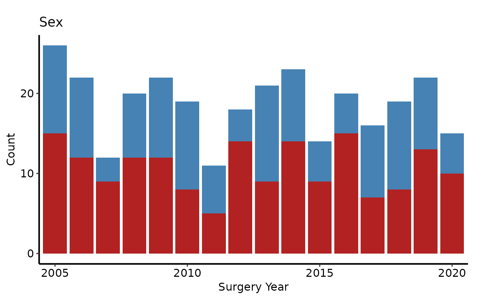
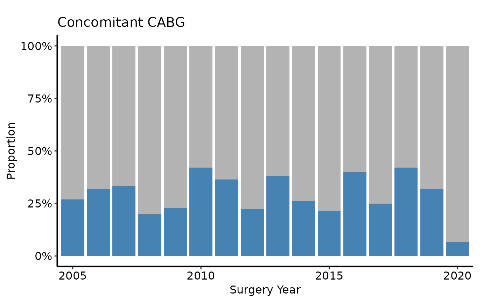
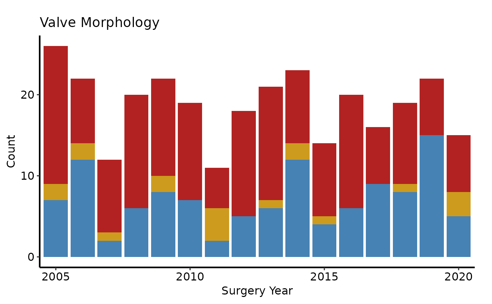
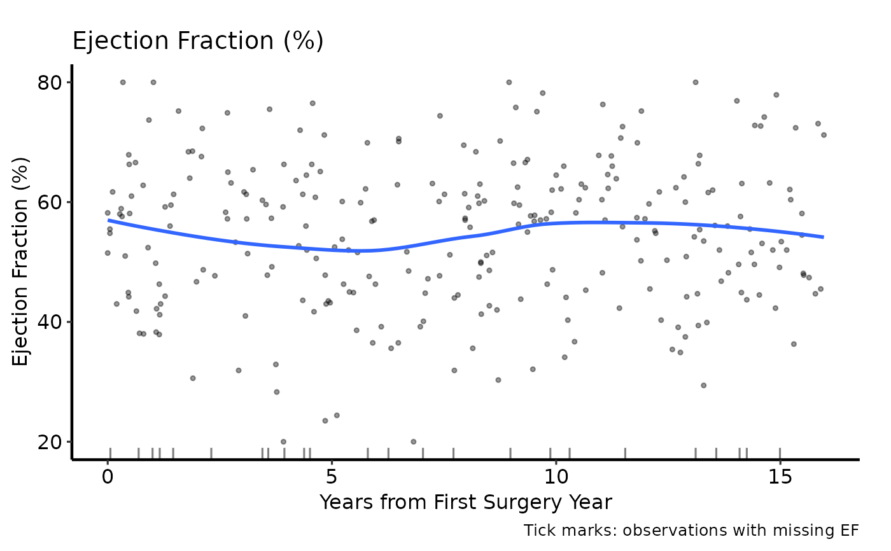
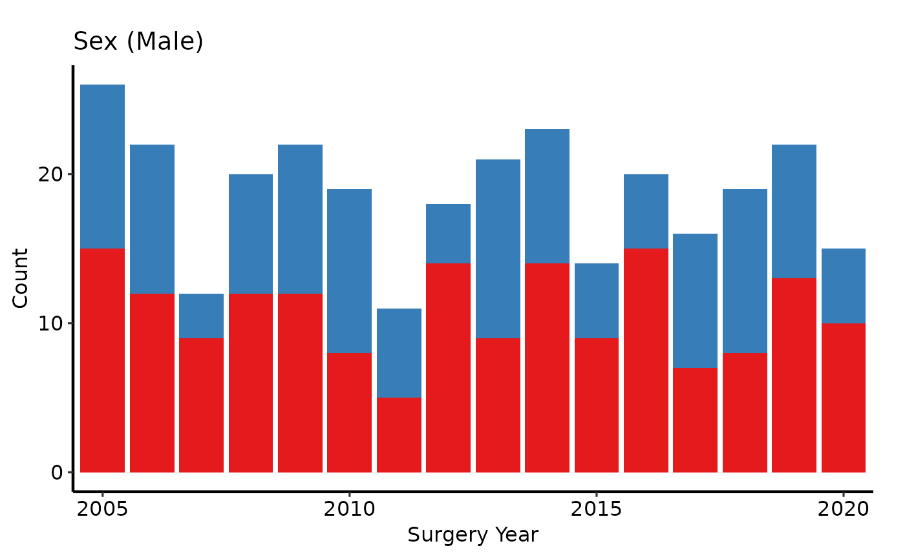
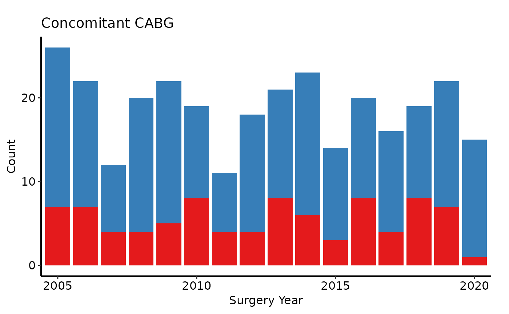
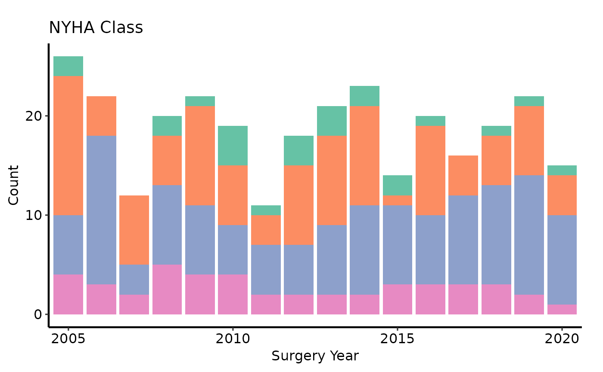
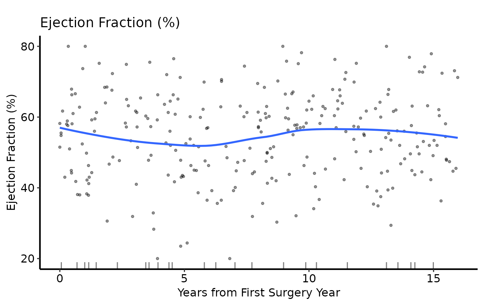

Produces an exploratory data analysis plot for a single variable against a
reference time axis. Variable type is detected automatically using
eda_classify_var():
Usage
eda_plot(
data,
x_col = "year",
y_col = "ef",
y_label = NULL,
unique_limit = 6L,
show_percent = FALSE,
smooth_method = "loess",
smooth_span = 0.8,
smooth_se = FALSE
)Arguments
- data
Data frame; one row per observation.
- x_col
Name of the reference (time/grouping) column. Used as the x-axis for both scatter and bar plots. For barplots it is coerced to a factor. Default
"year".- y_col
Name of the variable to plot. Default
"ef".- y_label
Optional human-readable label for the variable, used as the plot title, y-axis label (continuous), and fill-legend name (categorical). When
NULL(default),y_colis used. Matches thevar_labels/var.namesoverride intp.dp.EDA_barplots_scatterplots_varnames.R.- unique_limit
Integer threshold passed to
eda_classify_var()to distinguish categorical from continuous numeric columns. Default6.- show_percent
Logical; for categorical plots, use proportions (
position = "fill") instead of counts (position = "stack")? DefaultFALSE.- smooth_method
Smoothing method for continuous plots, passed to
ggplot2::geom_smooth(). Default"loess".- smooth_span
LOESS span. Default
0.8.- smooth_se
Logical; show confidence ribbon around smooth? Default
FALSE.
Value
A ggplot2::ggplot() object.
Details
Continuous (
"Cont"): scatter ofy_colvsx_colwith a LOESS smoother overlay and a rug on the x-axis for observations wherey_colis missing.Numeric categorical (
"Cat_Num"): stacked bar chart of counts (or proportions whenshow_percent = TRUE) perx_collevel.Character categorical (
"Cat_Char"): same stacked bar, colouring each string level separately.
In all cases NA values are shown as an explicit fill level labelled
"(Missing)", so they can be coloured via scale_fill_manual().
Use eda_select_vars() to pick a named subset of variables before
iterating with lapply().
Returns a bare ggplot2::ggplot() object. Compose with scale_fill_*,
scale_colour_*, labs(), annotate(), and hvti_theme().
References
R templates: tp.dp.EDA_barplots_scatterplots.R,
tp.dp.EDA_barplots_scatterplots_varnames.R;
helper: Barplot_Scatterplot_Function.R
(Function_DataPlotting(), Order_Variables()).
Examples
dta <- sample_eda_data(n = 300, seed = 42)
# --- Binary categorical: count barplot ------------------------------------
# male is 0/1; y_label sets title and fill legend name.
eda_plot(dta, x_col = "year", y_col = "male",
y_label = "Sex") +
ggplot2::scale_fill_manual(
values = c("0" = "steelblue", "1" = "firebrick", "(Missing)" = "grey80"),
labels = c("0" = "Female", "1" = "Male", "(Missing)" = "Missing"),
name = NULL
) +
ggplot2::scale_x_discrete(breaks = seq(2005, 2020, 5)) +
ggplot2::labs(x = "Surgery Year", y = "Count") +
hvti_theme("manuscript")

# --- Binary categorical: percentage barplot -------------------------------
eda_plot(dta, x_col = "year", y_col = "cabg",
y_label = "Concomitant CABG", show_percent = TRUE) +
ggplot2::scale_fill_manual(
values = c("0" = "grey70", "1" = "steelblue", "(Missing)" = "grey90"),
labels = c("0" = "No CABG", "1" = "CABG", "(Missing)" = "Missing"),
name = NULL
) +
ggplot2::scale_x_discrete(breaks = seq(2005, 2020, 5)) +
ggplot2::scale_y_continuous(labels = scales::percent) +
ggplot2::labs(x = "Surgery Year", y = "Proportion") +
hvti_theme("manuscript")
#> Scale for y is already present.
#> Adding another scale for y, which will replace the existing scale.

# --- Ordinal categorical (4 levels) with RColorBrewer --------------------
eda_plot(dta, x_col = "year", y_col = "nyha",
y_label = "Preoperative NYHA Class") +
ggplot2::scale_fill_brewer(
palette = "RdYlGn", direction = -1,
labels = c("1" = "I", "2" = "II", "3" = "III", "4" = "IV",
"(Missing)" = "Missing"),
name = "NYHA"
) +
ggplot2::scale_x_discrete(breaks = seq(2005, 2020, 5)) +
ggplot2::labs(x = "Surgery Year", y = "Count") +
hvti_theme("manuscript")
 # --- Character categorical -----------------------------------------------
eda_plot(dta, x_col = "year", y_col = "valve_morph",
y_label = "Valve Morphology") +
ggplot2::scale_fill_manual(
values = c(Bicuspid = "steelblue",
Tricuspid = "firebrick",
Unicuspid = "goldenrod3",
"(Missing)" = "grey80"),
name = "Morphology"
) +
ggplot2::scale_x_discrete(breaks = seq(2005, 2020, 5)) +
ggplot2::labs(x = "Surgery Year", y = "Count") +
hvti_theme("manuscript")
# --- Character categorical -----------------------------------------------
eda_plot(dta, x_col = "year", y_col = "valve_morph",
y_label = "Valve Morphology") +
ggplot2::scale_fill_manual(
values = c(Bicuspid = "steelblue",
Tricuspid = "firebrick",
Unicuspid = "goldenrod3",
"(Missing)" = "grey80"),
name = "Morphology"
) +
ggplot2::scale_x_discrete(breaks = seq(2005, 2020, 5)) +
ggplot2::labs(x = "Surgery Year", y = "Count") +
hvti_theme("manuscript")

# --- Continuous: scatter + LOESS -----------------------------------------
eda_plot(dta, x_col = "op_years", y_col = "ef",
y_label = "Ejection Fraction (%)") +
ggplot2::scale_colour_manual(values = c("firebrick"), guide = "none") +
ggplot2::scale_x_continuous(breaks = seq(0, 15, 5)) +
ggplot2::scale_y_continuous(limits = c(20, 80),
breaks = seq(20, 80, 20)) +
ggplot2::labs(x = "Years from First Surgery Year",
caption = "Tick marks: observations with missing EF") +
hvti_theme("manuscript")

# --- Continuous: annotated -----------------------------------------------
eda_plot(dta, x_col = "op_years", y_col = "peak_grad",
y_label = "Peak Gradient (mmHg)") +
ggplot2::scale_colour_manual(values = c("steelblue"), guide = "none") +
ggplot2::scale_x_continuous(breaks = seq(0, 15, 5)) +
ggplot2::labs(x = "Years from First Surgery Year") +
ggplot2::annotate("text", x = 12, y = 70,
label = "LOESS span = 0.8",
size = 3, colour = "grey40", fontface = "italic") +
hvti_theme("manuscript")
 # --- Variable selection + labels (varnames template pattern) --------------
# Matches Var_CatList / var_labels workflow in
# tp.dp.EDA_barplots_scatterplots_varnames.R.
# Named vector: names = column names, values = human-readable labels.
bin_vars <- c(male = "Sex (Male)", cabg = "Concomitant CABG")
sub_bin <- eda_select_vars(dta, c("year", names(bin_vars)))
p_bin <- lapply(names(bin_vars), function(cn) {
eda_plot(sub_bin, x_col = "year", y_col = cn,
y_label = bin_vars[[cn]]) +
ggplot2::scale_fill_brewer(palette = "Set1", direction = -1,
name = NULL) +
ggplot2::scale_x_discrete(breaks = seq(2005, 2020, 5)) +
ggplot2::labs(x = "Surgery Year", y = "Count") +
hvti_theme("manuscript")
})
p_bin[[1]]
# --- Variable selection + labels (varnames template pattern) --------------
# Matches Var_CatList / var_labels workflow in
# tp.dp.EDA_barplots_scatterplots_varnames.R.
# Named vector: names = column names, values = human-readable labels.
bin_vars <- c(male = "Sex (Male)", cabg = "Concomitant CABG")
sub_bin <- eda_select_vars(dta, c("year", names(bin_vars)))
p_bin <- lapply(names(bin_vars), function(cn) {
eda_plot(sub_bin, x_col = "year", y_col = cn,
y_label = bin_vars[[cn]]) +
ggplot2::scale_fill_brewer(palette = "Set1", direction = -1,
name = NULL) +
ggplot2::scale_x_discrete(breaks = seq(2005, 2020, 5)) +
ggplot2::labs(x = "Surgery Year", y = "Count") +
hvti_theme("manuscript")
})
p_bin[[1]]

p_bin[[2]]

# --- Variable selection: ordinal / multi-level categorical ----------------
# Matches Var_CatList with Min_Categories=3, Max_Categories=7.
cat_vars <- c(nyha = "NYHA Class",
valve_morph = "Valve Morphology")
sub_cat <- eda_select_vars(dta, c("year", names(cat_vars)))
p_cat <- lapply(names(cat_vars), function(cn) {
eda_plot(sub_cat, x_col = "year", y_col = cn,
y_label = cat_vars[[cn]]) +
ggplot2::scale_fill_brewer(palette = "Set2", name = NULL) +
ggplot2::scale_x_discrete(breaks = seq(2005, 2020, 5)) +
ggplot2::labs(x = "Surgery Year", y = "Count") +
hvti_theme("manuscript")
})
p_cat[[1]]

# --- Variable selection: continuous ---------------------------------------
# Matches Var_ContList / var_labels workflow.
cont_vars <- c(ef = "Ejection Fraction (%)",
lv_mass = "LV Mass Index (g/m\u00b2)",
peak_grad = "Peak Gradient (mmHg)")
sub_cont <- eda_select_vars(dta, c("op_years", names(cont_vars)))
p_cont <- lapply(names(cont_vars), function(cn) {
eda_plot(sub_cont, x_col = "op_years", y_col = cn,
y_label = cont_vars[[cn]]) +
ggplot2::scale_colour_manual(values = c("steelblue"), guide = "none") +
ggplot2::scale_x_continuous(breaks = seq(0, 15, 5)) +
ggplot2::labs(x = "Years from First Surgery Year") +
hvti_theme("manuscript")
})
p_cont[[1]]

# --- Save: multi-page PDF via ggsave + gridExtra -------------------------
if (FALSE) { # \dontrun{
all_plots <- c(p_bin, p_cat, p_cont)
per_page <- 9L # 3 x 3 grid
for (pg in seq(1, length(all_plots), by = per_page)) {
idx <- seq(pg, min(pg + per_page - 1L, length(all_plots)))
grob <- gridExtra::marrangeGrob(all_plots[idx], nrow = 3, ncol = 3)
ggplot2::ggsave(
filename = sprintf("eda_page%02d.pdf", ceiling(pg / per_page)),
plot = grob,
width = 14, height = 14
)
}
} # }